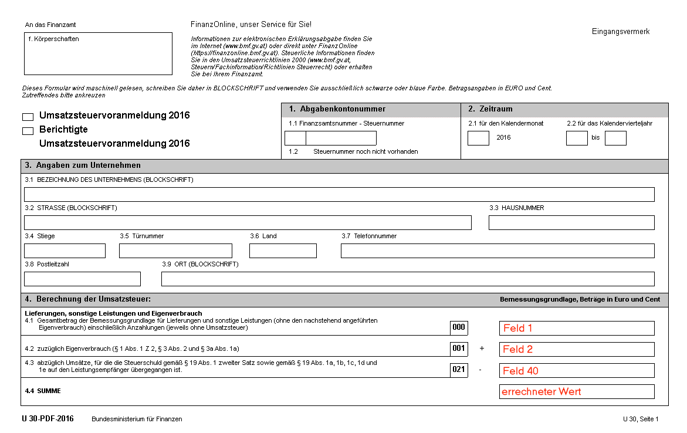
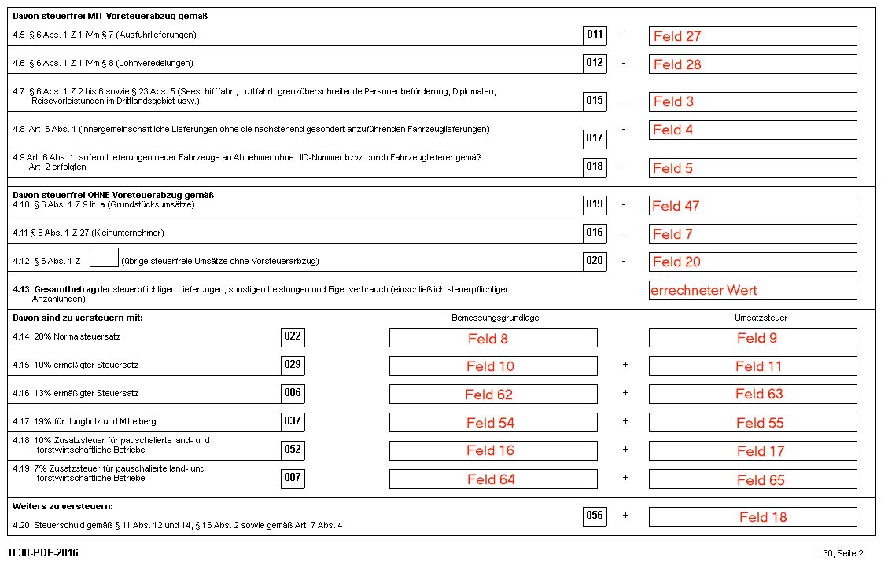
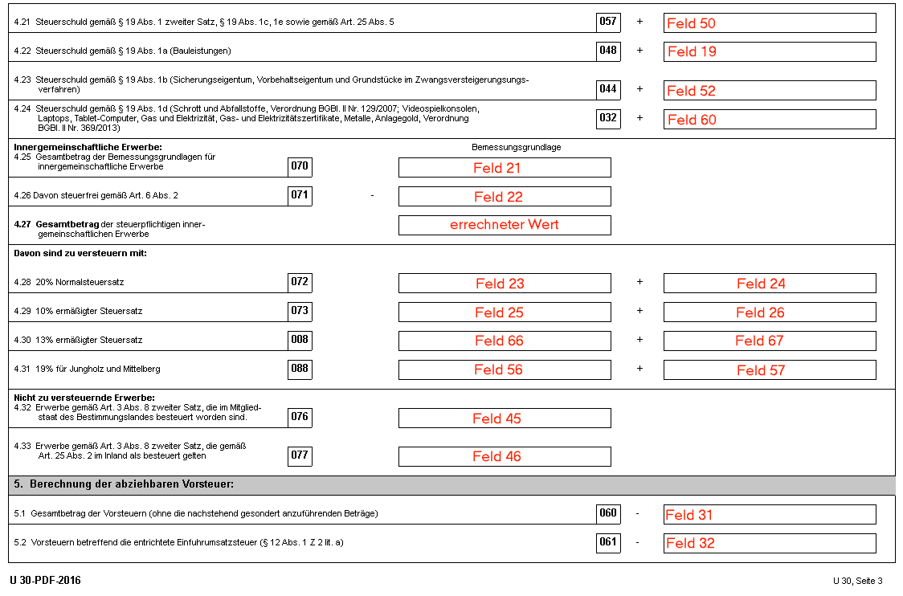
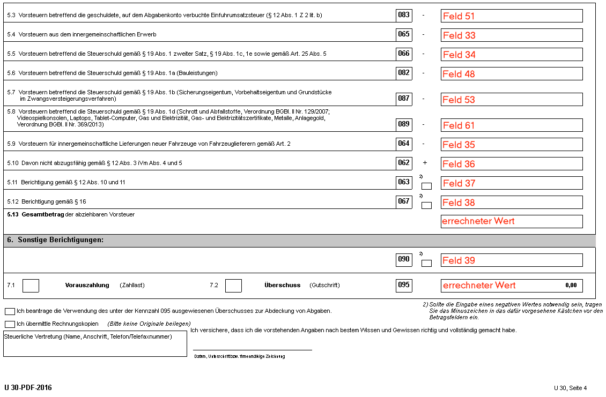
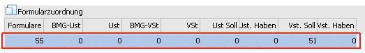
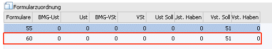
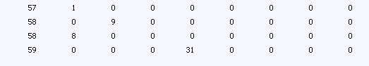
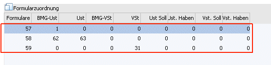
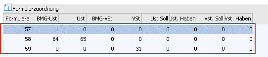
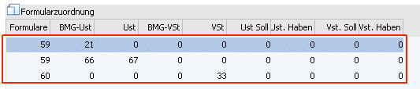

Die Kennzahlen 025 und 038 stehen in Formular nicht mehr zur Verfügung.
Durch das Steuerreformpaket 2015/2016 kommt es bei den ermäßigten Steuersätzen zu Änderungen: Der ermäßigte Steuersatz von 12% wird auf 13% angehoben. Gleichzeitig werden bestimmte Umsätze, die bislang dem ermäßigten Satz von 10% unterlagen, dem neuen Satz von 13% unterworfen.
ü Der ermäßigte Steuersatz für bestimmte Umsätze (Lieferungen und Einfuhr von lebenden Tieren und Pflanzen sowie Futtermitteln etc.) erhöht sich ab 1.Jänner 2016 auf 13 %.
ü Der ermäßigte Steuersatz für die Beherbergung in eingerichteten Wohn- und Schlafräumen sowie für Eintrittskarten im kulturellen Bereich erhöht sich ab 1. Mai 2016 auf 13 %. Wird von der Unternehmerin/vom Unternehmer zusammen mit der Beherbergung auch ein ortsübliches Frühstück verabreicht, unterliegt dieses wie bisher dem ermäßigten Steuersatz von 10 %.
ü Der ermäßigte Steuersatz für Ab-Hof-Verkauf von Wein wird in den ermäßigten Steuersatz von 13 % überführt (denn unionsrechtlich sind nicht mehr als zwei ermäßigte Steuersätze möglich).
ü Der Steuersatz für Eintrittskarten zu Sportveranstaltungen wird von 20 % auf 13 % gesenkt. Damit gilt künftig ein einheitlicher Steuersatz von 13 % für Kultur- und Sportveranstaltungen.
Die Umsatzsteuervoranmeldung ab 01/2016 umfasst 4 Seiten; die Formulare in der WinLine wurden dazu mit den Nummern 57-60 definiert.
UVA-Formular 01/2016 - Seite 1 = Formular 57

UVA-Formular 01/2016 - Seite 2 = Formular 58

UVA-Formular 01/2016 - Seite 3 = Formular 59

UVA-Formular 01/2016 - Seite 4 = Formular 60

Beispiel einer Steuerzeile welche die Kennzahl 083 verwendet:
Für die Ausgabe des UVA-Formulars ab 01/2014 befindet sich die Kennzahl 083 auf der dritten Seite des UVA-Formulars. Dies entspricht dem Formular mit der Nr. 55 und der Position 51 (die Position bleibt gleich).

Für die Ausgabe des UVA-Formulars ab 01/2016 befindet sich die Kennzahl 083 nun auf der vierten Seite des UVA-Formulars. Dies entspricht nun dem Formular mit der Nr. 60 und der Position 51 (die Position bleibt gleich).

Hinweis:
Bei einer bereits bestehenden Steuerzeile mit der Kennzahl 083, ist keine Änderung notwendig, die Kennzahl am UVA-Formular wird richtig befüllt.
Beispiel zur Anlage einer "normalen" Steuerzeile:
Die Position 1 enthält z. B. den Gesamtbetrag der Bemessungsgrundlagen für Lieferungen, sonstige Leistungen und den Eigenverbrauch einschließlich Anzahlungen. Für die entsprechenden Steuerzeilen (Erlöse 0 %, 10 %, 20 % etc.) heißt das, dass für das Formular 57 die Bemessungsgrundlage Umsatzsteuer in die Position 1 gerechnet werden muss.

Die Position 8 enthält den Gesamtbetrag der Bemessungsgrundlagen für 20 %ige Umsätze. D. h. in der Steuerzeile muss bei den entsprechenden Zeilen (Umsatzsteuerzeilen mit 20 %) bei der BMG UST 8 eingetragen werden. Da dieses Feld aber schon mit der Position 1 belegt ist, wird eine zweite Zeile eröffnet, wo das Formular 58 eingetragen wird. Dort kann die Position 8 bei der BMG UST hinterlegt werden. Pro Steuerzeile kann ein Formular auch öfters verwendet werden, so dass jede Steuerzeile an jeder beliebigen Position hinterlegt werden kann.
Die Position 9 enthält den Steuerbetrag der 20 %igen Umsätze. Daher muss in den entsprechenden Steuerzeilen (Umsatzsteuerzeilen mit 20%) im Feld USt der Eintrag "9" (Formular 58) erfolgen.
Beispiel einer Steuerzeile welche die Kennzahl 006 verwendet
Für die Ausgabe des UVA-Formulars ab 01/2016 befindet sich die Kennzahl 006 auf der zweiten Seite des UVA-Formulars. Dies entspricht dem Formular mit der Nr. 58. Die Bemessungsgrundlage Umsatzsteuer mit der Position 1 befindet sich auf der ersten Seite des UVA-Formulars, dies entspricht dem Formular 57.

Die Position 62 enthält den Gesamtbetrag der Bemessungsgrundlagen für 13 %ige Umsätze. D. h. in der Steuerzeile muss bei den entsprechenden Zeilen (Umsatzsteuerzeilen mit 13 %) bei der BMG UST 62 eingetragen werden. Damit muss in der zweiten Zeile das Formular 58 eingetragen werden. Dort kann die Position 62 bei der BMG UST hinterlegt werden. Pro Steuerzeile kann ein Formular auch öfters verwendet werden, so dass jede Steuerzeile an jeder beliebigen Position hinterlegt werden kann.
Die Position 63 enthält den Steuerbetrag der 13 %igen Umsätze. Daher muss in den entsprechenden Steuerzeilen (Umsatzsteuerzeilen mit 13%) im Feld USt der Eintrag "63" (Formular 58) erfolgen.
Beispiel einer Steuerzeile welche die Kennzahl 007 verwendet
Für die Ausgabe des UVA-Formulars ab 01/2016 befindet sich die Kennzahl 007 auf der zweiten Seite des UVA-Formulars. Dies entspricht dem Formular mit der Nr. 58. Die Bemessungsgrundlage Umsatzsteuer mit der Position 1 befindet sich auf der ersten Seite des UVA-Formulars, dies entspricht dem Formular 57.

Die Position 64 enthält den Gesamtbetrag der Bemessungsgrundlagen für 7 %ige Umsätze. D. h. in der Steuerzeile muss bei den entsprechenden Zeilen (Umsatzsteuerzeilen mit 7 %) bei der BMG UST 64 eingetragen werden. Damit muss in der zweiten Zeile das Formular 58 eingetragen werden. Dort kann die Position 64 bei der BMG UST hinterlegt werden. Pro Steuerzeile kann ein Formular auch öfters verwendet werden, so dass jede Steuerzeile an jeder beliebigen Position hinterlegt werden kann.
Die Position 65 enthält den Steuerbetrag der 7 %igen Umsätze. Daher muss in den entsprechenden Steuerzeilen (Umsatzsteuerzeilen mit 7%) im Feld USt der Eintrag "65" (Formular 58) erfolgen.
Beispiel einer Steuerzeile welche die Kennzahl 008 verwendet
Für die Ausgabe des UVA-Formulars ab 01/2016 befindet sich die Kennzahl 008 auf der dritten Seite des UVA-Formulars. Dies entspricht dem Formular mit der Nr. 59. Die Bemessungsgrundlage für die Erwerbssteuer mit der Position 21 befindet sich auf der dritten Seite des UVA-Formulars, dies entspricht dem Formular 59.

Die Position 66 enthält den Gesamtbetrag der Bemessungsgrundlagen für 13 %ige innergemeinschaftliche Erwerbe. D. h. in der Steuerzeile muss bei den entsprechenden Zeilen (Steuerzeile mit 13 %) bei der BMG UST 66 eingetragen werden. Da dieses Feld aber schon mit der Position 21 belegt ist, wird eine zweite Zeile eröffnet, wo das Formular 59 eingetragen wird. Dort kann die Position 66 bei der BMG UST hinterlegt werden. Pro Steuerzeile kann ein Formular auch öfters verwendet werden, so dass jede Steuerzeile an jeder beliebigen Position hinterlegt werden kann.
Die Position 67 enthält den Steuerbetrag der 13 %igen innergemeinschaftlichen Erwerbe. Daher muss in den entsprechenden Steuerzeilen (Erwerbssteuerzeilen mit 13%) im Feld USt der Eintrag "67" (Formular 59) erfolgen.